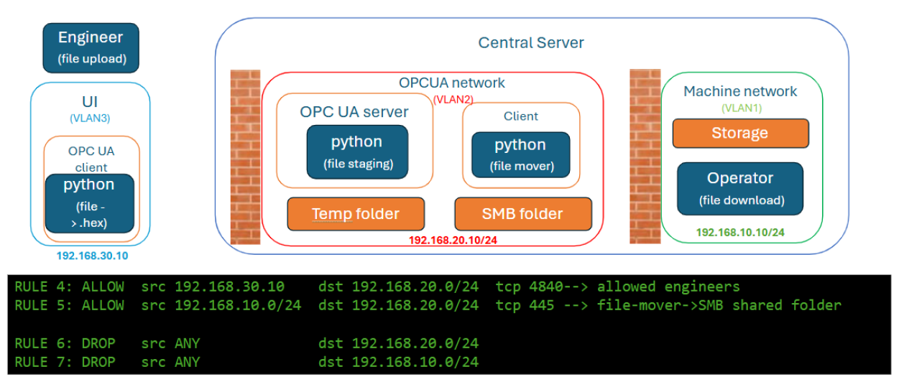
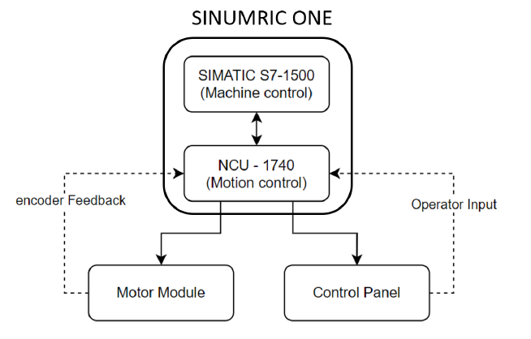
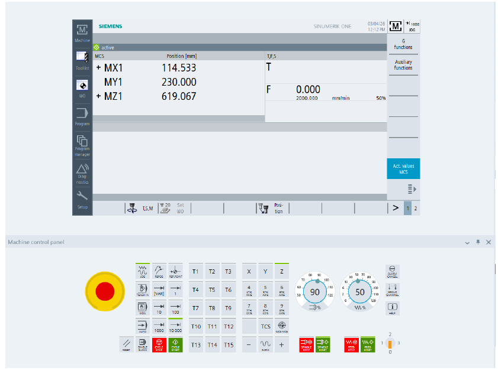
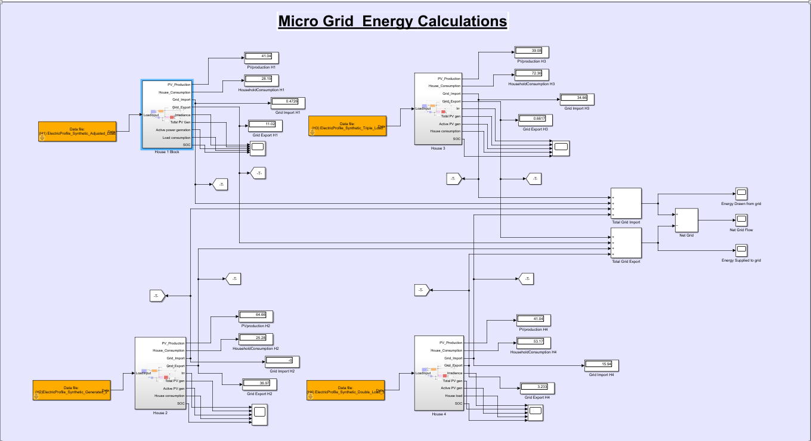
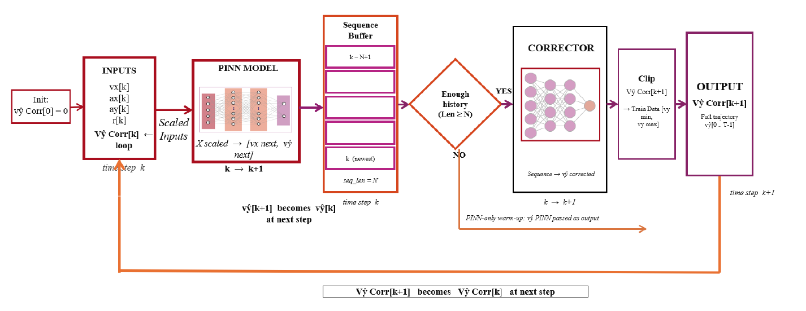
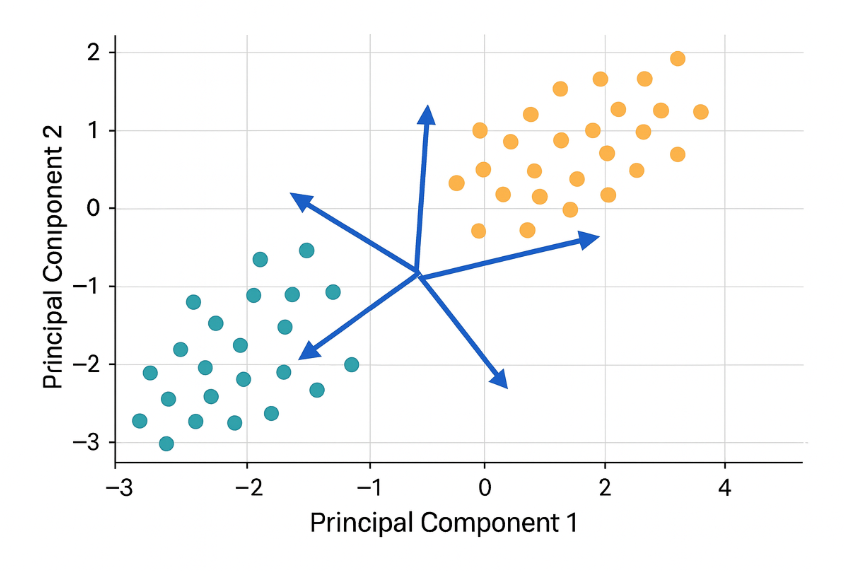
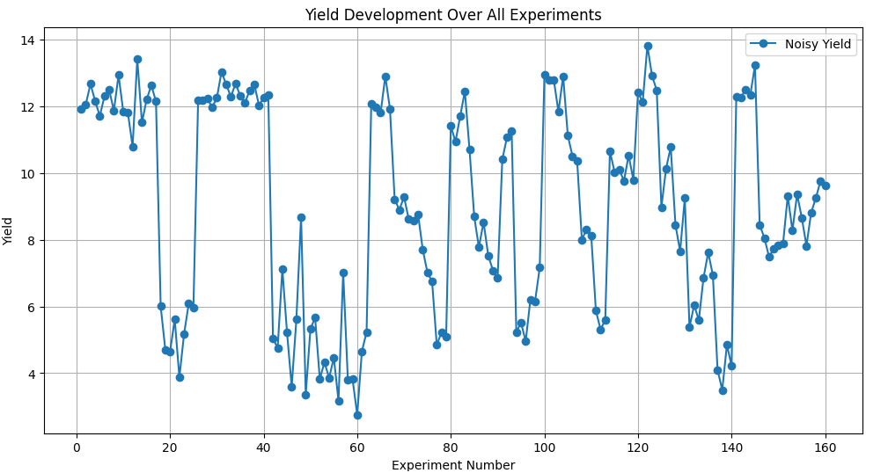
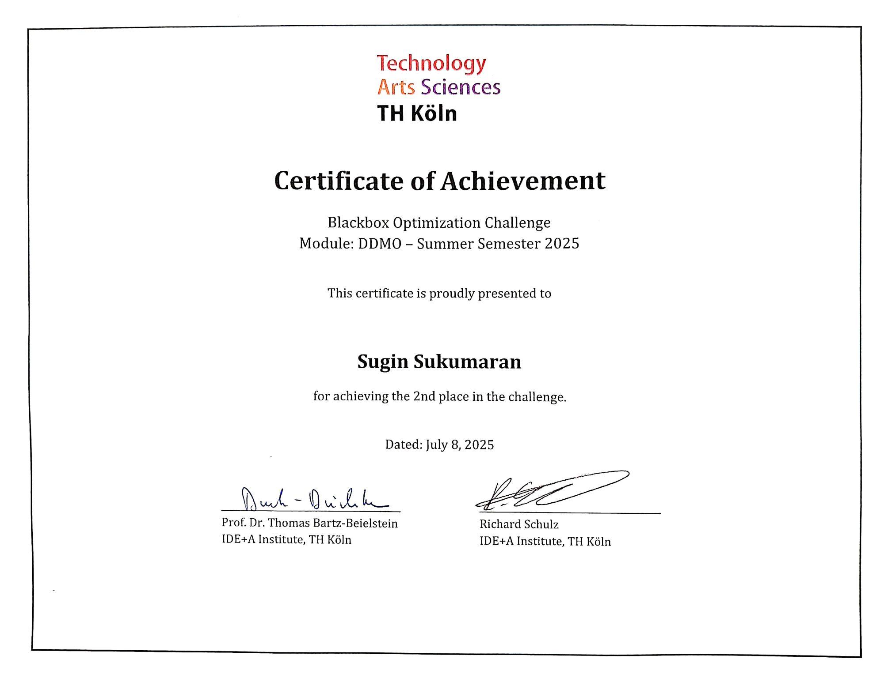

Sugin Sukumaran
Automation and IT Master’s candidate at TH Köln with 4+ years of hands-on experience in industrial automation, electrical systems and operational technology. I specialise in OT/IIoT digitalization, Industry 4.0, industrial control systems and secure industrial communication.
My experience connects field-level automation with operational and enterprise data systems: PLC/DCS engineering, SCADA/HMI commissioning, industrial networking, generator telematics and OT/IT integration. I work with Siemens and Honeywell control systems, OPC UA, PROFINET, MQTT, Modbus TCP, SAE J1939 CAN, ComAp tools, EPLAN/WSCAD, SQL, Power BI, Python and MATLAB/Simulink. I am seeking a Master’s thesis position, working-student role or full-time internship in industrial digitalization, smart manufacturing, OT cybersecurity, electrical automation or energy systems.
I am seeking a Master’s thesis position, working-student role or full-time internship in industrial digitalization, smart manufacturing, connected assets, OT cybersecurity, electrical automation or energy systems.
Work Experience
Industrial Engineering Intern — OT, IIoT & Electrical Automation
- Installed and configured ComAp generator controllers, InteliVision displays and BaseBox cellular routers; configured AirGate connectivity for remote telemetry through WebSupervisor.
- Investigated SAE J1939 CAN communication issues between engine ECUs, generator controllers and telematics modules to support reliable telemetry flow.
- Supported integration of Caterpillar VisionLink and ComAp telemetry into ERP-oriented monitoring workflows for asset tracking and predictive-maintenance use cases.
- Audited legacy Siemens S5 conveyor-control panels, mapped field I/O and supported migration of control logic to Siemens LOGO! PLCs.
- Created water-treatment pump electrical schematics in WSCAD and carried out field diagnostics on MV distribution cabinets.
Project Engineer — Process Automation
- Configured Honeywell C300 DCS control logic in ControlBuilder and ML-PLC logic in SoftMaster; performed I/O tag mapping and database configuration in Configuration Studio.
- Developed SCADA/HMI graphics with HMIWeb Display Builder using P&ID requirements for process monitoring and operator interaction.
- Supported FAT, SAT, on-site commissioning, cabinet installation and start-up at ONGC; contributed to automation projects for HPCL, BPCL, IOCL and chemical-plant environments.
- Installed, wired and diagnosed PROFINET networks, remote I/O modules and field devices for reliable PLC-to-field communication.
- Maintained Honeywell Experion PKS/ESIS repositories and performed system backup and restoration activities.
Instrumentation and Quality Intern
- Supported PLC programming, HMI-screen development and SCADA-based process-monitoring activities for manufacturing environments.
- Assisted in industrial control-valve manufacturing, quality-assurance testing, supplier coordination and material-procurement activities.
Cable and Wire Harness Intern
- Assembled industrial cable and wire harnesses using fiber-optic, CAT5/CAT6 Ethernet, coaxial and multi-core cables.
- Performed lead-free soldering, crimping, stripping, routing, bundling, labelling and continuity/insulation tests according to assembly requirements.
Academic Projects
Secure OT File Transfer Architecture

Designed and validated a defense-in-depth file-transfer architecture for legacy operational technology environments. The solution replaces direct legacy file-sharing access with encrypted OPC UA-based file delivery, network segmentation, certificate-based mutual authentication and controlled staging between IT and OT zones.
The prototype used OPC UA security policies with encryption, integrity validation and explicit firewall-controlled communication paths. Laboratory tests verified secure end-to-end file delivery while preventing unauthorised lateral access between network zones.
Tools: OPC UA, X.509 certificates, Basic256Sha256, AES-256, SHA-256, Sophos SG 125, VLAN segmentation, Streamlit, Python, SMB staging
Topics: OT cybersecurity, IEC 62443 principles, defense in depth, network zoning and conduits, secure file transfer, legacy-system protection
SINUMERIK ONE Virtual CNC Commissioning


Commissioned and validated a virtual three-axis SINUMERIK ONE CNC system from PLC to NC and HMI using Siemens TIA Portal V20 and Create MyVirtualMachine. Configured and tested the linear axes MX1/X1, MY1/Y1 and MZ1/Z1 with SINAMICS S120 and simulated PROFINET I/O.
Verified PLC–NC communication, axis-enable logic and machine functions using the virtual MCP483 milling panel. Functional tests confirmed bidirectional JOG motion, feedrate override at 50% and 100%, and correct emergency-stop behaviour, including alarm 3000, controlled axis braking and reset acknowledgement.
Resolved a virtual-NCU detection issue during TIA Portal hardware download by diagnosing the PLCSIM Advanced network-adapter configuration and restoring TCP/IPv4 connectivity. The completed machine configuration, PLC software and NC data were saved as a reusable virtual commissioning project.
Tools: Siemens TIA Portal V20, SINUMERIK ONE, Create MyVirtualMachine, PLCSIM Advanced, SINAMICS S120, SINUMERIK Operate, MCP483, PROFINET
Key validation: Three-axis JOG motion, feedrate override, E-stop and reset behaviour, PLC–NC interface, virtual NCU download and HMI operation
Topics: Virtual commissioning, CNC automation, motion control, PLC–NC–HMI integration, functional safety validation, troubleshooting
Outcome: Delivered a commissioned and reusable virtual CNC-machine project, demonstrating correct operation of three simulated linear axes and core machine-control functions before physical-machine deployment.
Residential PV, Battery and Grid-Interaction Simulation

Developed a high-resolution MATLAB/Simulink simulation of a decentralised residential energy system comprising four households, each with photovoltaic generation, battery storage, individual load profiles and a bidirectional grid connection. The model simulated seven continuous days with a one-second fixed time step.
Integrated location-specific solar-irradiance data for Gummersbach, Germany from the Open-Meteo API and processed the time series in MATLAB for Simulink workspace integration. Modelled PV generation, inverter behaviour, household demand, battery state of charge, grid import/export and aggregated neighbourhood energy flows using the CARNOT Toolbox.
Evaluated how load diversity, PV generation and battery configuration affect grid reliance, PV self-consumption and tariff-based energy cost. In the battery-tuning study, a larger 5 kWh battery with 80% initial state of charge achieved zero grid import for the tested household configuration, while a smaller 2 kWh battery increased grid dependence.
Implemented time-of-use tariff logic using a MATLAB Function block to calculate import cost and export credit. The analysis showed that household demand patterns and battery sizing significantly influence energy independence and economic performance, even without an active real-time optimisation controller.
Tools: MATLAB, Simulink, CARNOT Toolbox, MATLAB Function blocks, Open-Meteo API, workspace data integration, data visualisation
Methods: PV and battery modelling, state-of-charge analysis, time-domain simulation, load-profile analysis, grid import/export analysis, tariff calculation, battery parameter tuning
System: Four-household residential PV-battery neighbourhood model simulated for seven days at one-second resolution
View IEEE Technical Report (PDF)
Outcome: Built and evaluated a multi-household PV-battery simulation that demonstrated the impact of irradiance, consumption behaviour and battery sizing on self-consumption, grid dependence and time-of-use energy costs.
Physics-Informed Neural Networks for Vehicle Side-Slip Estimation

Developed a physics-informed neural-network framework to estimate vehicle lateral velocity and side-slip angle when direct lateral-velocity measurements are unavailable. The model combines supervised learning with kinematic vehicle-model constraints and was evaluated using cross-vehicle racing data.
Compared physics-loss scheduling strategies, collocation-point sampling methods and hyperparameter configurations using Ray Tune. The best supervised configuration used physics-cutoff scheduling and Latin Hypercube Sampling, achieving cross-vehicle lateral-velocity RMSE of approximately 0.0243 m/s and side-slip-angle RMSE of 0.0847°.
Addressed self-loop error accumulation by developing hybrid PINN + RNN and PINN + Temporal Convolutional Network (TCN) corrector architectures. The best PINN + TCN configuration, using a 200-step temporal window, reduced autonomous lateral-velocity estimation RMSE from 0.462 m/s to 0.369 m/s: a 20.1% improvement over the standalone self-loop PINN.
Tools: Python, PyTorch, Ray Tune, HyperOpt, Optuna, scikit-learn, LSTM/GRU, Temporal Convolutional Networks, K-Means, Latin Hypercube Sampling
Methods: Physics-Informed Neural Networks, Kinematic Vehicle Model, cross-vehicle validation, Bayesian hyperparameter optimization, physics-loss scheduling, self-loop state estimation
Dataset: Revs Vehicle Dynamics Database — 2013/2014 Targa Sixty-Six vehicle dynamics data
Outcome: Demonstrated a hybrid physics-data-driven approach for autonomous vehicle-state estimation, improving self-loop lateral-velocity estimation by 20.1% without relying on a direct lateral-velocity sensor.
Dimensionality Reduction and Model Optimisation Using PCA

Developed a Python workflow to reduce the dimensionality of an energy-related dataset using Principal Component Analysis (PCA). The work examined feature correlations, explained variance and the influence of reduced features on regression-model performance.
Prepared and analysed the dataset using pandas, then applied PCA with scikit-learn to transform correlated input variables into a smaller set of principal components. Compared regression-model performance before and after feature reduction to evaluate the trade-off between model simplicity and predictive accuracy.
Visualised correlation patterns, PCA component behaviour and model-comparison results using matplotlib, seaborn and statsmodels. The project demonstrated a structured preprocessing workflow for engineering datasets, including feature exploration, dimensionality reduction, benchmarking and interpretation.
Tools: Python, pandas, NumPy, scikit-learn, matplotlib, seaborn, statsmodels, Jupyter Notebook
Methods: Principal Component Analysis, feature correlation analysis, explained-variance evaluation, regression benchmarking, data preprocessing and model comparison
Topics: Industrial data analytics, dimensionality reduction, machine learning preprocessing, feature engineering and model optimisation
View PCA Analysis Notebook on GitHub
Outcome: Built a reusable PCA-based preprocessing and benchmarking workflow to simplify high-dimensional engineering data while evaluating the impact of feature reduction on regression performance.
Black-Box Optimisation Using Kriging and Bayesian Methods

Developed a data-driven optimisation strategy for a noisy 15-parameter black-box yield-function challenge with a limited experimental budget. The objective was to identify high-yield parameter combinations while minimising costly experimental evaluations.
Analysed historical experiment data, including repeated noisy yield measurements, parameter settings and round-by-round best results. Built a Kriging surrogate model using Gaussian Process Regression with an RBF kernel and WhiteKernel noise component to estimate both expected yield and prediction uncertainty.
Generated candidate parameter sets across the search space and applied acquisition strategies—including Upper Confidence Bound (UCB) and Expected Improvement—to select experiments that balance exploitation of promising regions with exploration of uncertain regions. The workflow used historical data to reduce unnecessary API calls after the experimental budget was nearly exhausted.
The project included yield-development visualisation, per-round best-result tracking, leaderboard analysis, remaining-budget monitoring and comparison of surrogate-guided candidate suggestions. It demonstrated how Bayesian optimisation can support efficient decision-making when evaluation results are noisy and experiments are expensive.
Tools: Python, pandas, NumPy, requests, matplotlib, SciPy, scikit-learn, GaussianProcessRegressor, RBF kernel, WhiteKernel, Jupyter Notebook
Methods: Kriging, Gaussian Process Regression, Bayesian optimisation, Upper Confidence Bound, Expected Improvement, noisy-objective modelling, surrogate modelling, candidate sampling
Problem: Budget-constrained optimisation of a 15-parameter black-box yield function
View Black-Box Optimisation Notebook on GitHub
Outcome: Achieved second place in the TH Köln Black-Box Optimization Challenge by applying data analysis and surrogate-based Bayesian optimisation to identify high-performing parameter regions under strict experimental-budget constraints.
Technical Skills
Siemens TIA Portal V20, S7-1500, LOGO!, WinCC, SINUMERIK ONE, Create MyVirtualMachine, PLCSIM Advanced, SINAMICS S120, Honeywell Experion PKS, Honeywell C300/ControlBuilder, SoftMaster/ML-PLC, LAD, FBD, SCL/Structured Text
HMIWeb Display Builder, SCADA/HMI graphics, P&ID-based HMI development, I/O mapping, remote I/O, OPC UA, MQTT, PROFINET, PROFIBUS, Modbus TCP, SAE J1939 CAN, Industrial Ethernet, Wireshark
IEC 62443 principles, OPC UA security, X.509 certificate-based mutual authentication, AES-256 encryption, Basic256Sha256, SHA-256 integrity validation, VLAN segmentation, Suricata IDS, Sophos SG 125 firewall
ComAp controllers, LiteEdit, InteliMonitor, GenConfig, AirGate, WebSupervisor, InteliVision, BaseBox cellular routers, Teltonika gateways, Caterpillar VisionLink telemetry, engine-generator monitoring, fleet telematics
Python, pandas, NumPy, SQL, SQL Server, REST APIs, Node-RED, Power BI, PyTorch, scikit-learn, Physics-Informed Neural Networks, Gaussian Process Regression, Kriging, Bayesian Optimisation, Ray Tune, HyperOpt, Optuna, PCA, LSTM/GRU, Temporal Convolutional Networks
MATLAB/Simulink, CARNOT Toolbox, WSCAD Suite, EPLAN, electrical schematics, control-panel wiring, field I/O checks, FAT/SAT, commissioning, instrumentation troubleshooting, MV distribution-cabinet diagnostics, Git/GitHub, Sphinx technical documentation
Education
M.Eng. Automation and IT
90/120 ECTS completed | Current grade: 2.4 | Master’s thesis remaining
Focus: Industrial communication and information security, Industrial IT/IIoT, ERP integration, relational databases, control systems, modelling and simulation, optimization and machine learning.
B.E. Electronics and Instrumentation Engineering
CGPA: 8.86/10 | First Class with Distinction | 135 Credits
Focus: Industrial Automation PLC & SCADA, process control, instrumentation, industrial data networks, embedded systems and computer control.
Diploma in Instrument Technology
Focus: Process control, industrial instrumentation, measurement systems, transducers, industrial electronics and microcontroller interfacing.
Awards
-
Second Place — Black-Box Optimization Challenge (DDMO), TH Köln, Summer Semester 2025
